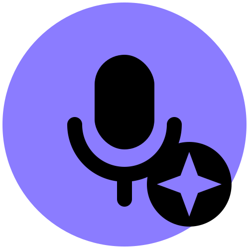
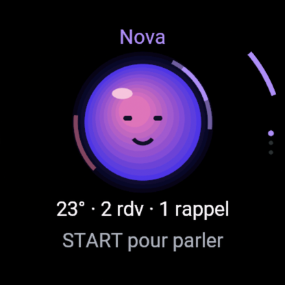
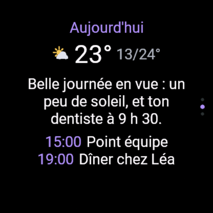
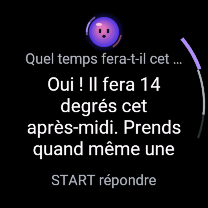
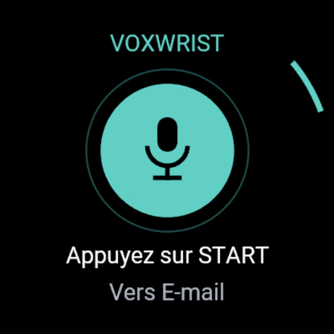
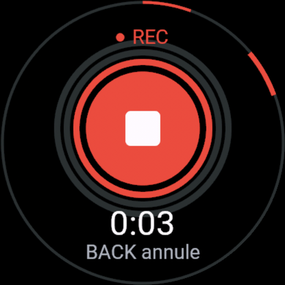
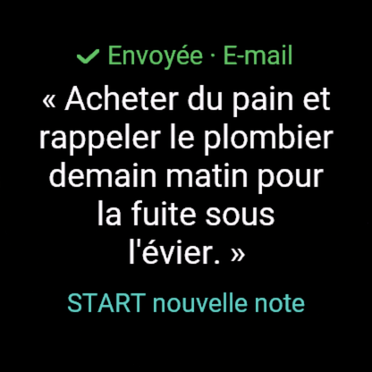

Voxwrist
Deux apps gratuites pour montres Garmin avec micro. Deux appuis, sans clavier. Avec votre propre clé IA.

Voxwrist Ask — votre assistant IA, à votre poignet


- START, posez votre question, START : l'assistant IA répond à voix haute et à l'écran. Enchaînez : « et demain ? ».
- Brief du jour : météo, prochains rendez-vous (lien iCal de votre agenda), e-mails non lus (votre adresse + un code d'accès mail, facultatif).
- Rappels à la voix : « rappelle-moi à 18 h d'appeler Paul ».
- Un orbe animé qui écoute, réfléchit et parle ; choisissez son nom et sa couleur. Clé IA au choix : avec une clé OpenAI (ou Google Gemini), la réponse est dite à voix haute ; avec une autre clé (Groq gratuite, Anthropic Claude), elle s'affiche à l'écran.
 Voxwrist Notes — dictez, c'est dans votre boîte
Voxwrist Notes — dictez, c'est dans votre boîte



- START, parlez (jusqu'à 2 minutes), START. Le texte s'affiche et part vers votre e-mail (par défaut), Notion ou Todoist.
- Hors connexion, la note attend sur la montre (5 max) et part au retour du téléphone.
Installation
- Installez l'app depuis le Connect IQ Store.
- Créez une clé IA : OpenAI (réponse à voix haute, vous payez OpenAI directement : quelques centimes), ou gratuite chez Groq ou Google Gemini.
- Appli Garmin Connect › votre montre › Applis Connect IQ › l'app › Réglages : collez la clé ; pour Notes, votre adresse e-mail (ou Notion / Todoist). Rien à taper sur la montre, aucun serveur à installer.
Compatibilité : fēnix 8 / 8 Pro / 9, Forerunner 570 / 970, Venu 4 / X1, MARQ 3, D2 Mach 2, Approach S72 (Connect IQ 6.0.3+).
Confidentialité — ni l'audio, ni les textes, ni vos clés ne sont conservés.
English
Voxwrist Ask is your AI assistant, on your wrist: press START, ask, and it answers out loud and on screen, with follow-ups, a daily brief (weather, calendar via a private iCal link, unread mail with your address and a mail access code, read-only) and voice reminders. An animated orb listens, thinks and speaks. Bring your own AI key: with an OpenAI (or Google Gemini) key the answer is spoken aloud; with other keys (free Groq, Anthropic Claude) it is shown on screen.
Voxwrist Notes: press START, speak, press START. The transcript is shown on the watch and sent to your email (default), Notion or Todoist. Both apps are free, need no account and store nothing. Privacy policy.
Contact : imbertjules@gmail.com